로키 - 아로크마커, 컨베어벨트 프로젝트 교안_0412¶
Version V1.0 최종 수정 일 2025.03.19 작성자 김루진 두산 프로젝트 교안
프로젝트 기초 환경 설정 아로크마커, 컨베어 벨트 조작 주행 및 매니퓰레이터 사용 학습 목표 내용 검증 필요 구어체 변경
터틀봇메내퓰레이터 참고 아두이노, 컨베이 벨트
터틀봇메내퓰레이터 참고 프로젝트 개발 하드웨어 아두이노 uno 1 컨베이어 1 컨베이어 모터 드라이버 1 USB camera 1 SMPS 1 12V 아답터 1 레이더 센서 1 turtlebot-3 1 OpenManipulator-X 1 배터리 2 배터리 충전기 2 오 린 나노 1 wifi 동글 1 노트북 1 라이다 센서
터틀봇메내퓰레이터 참고 아두이노
터틀봇메내퓰레이터 참고 아두이노
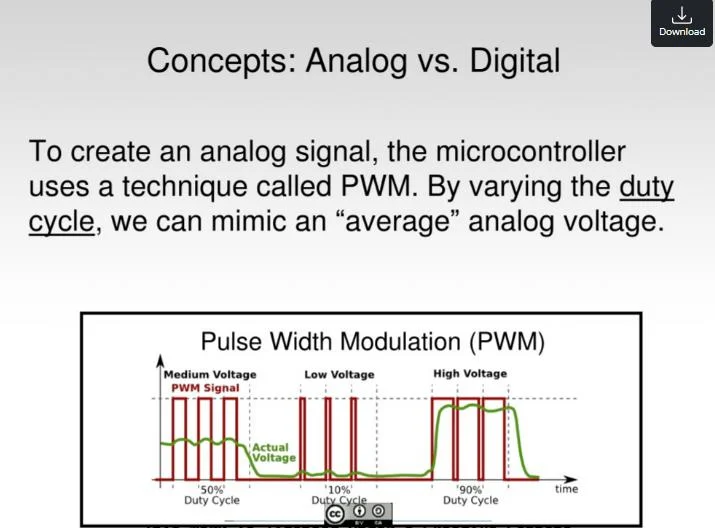
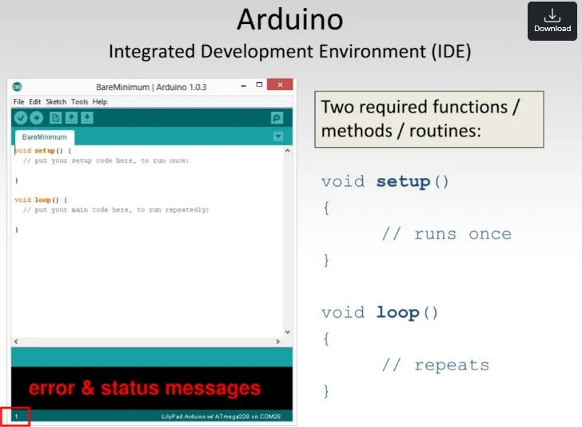
터틀봇메내퓰레이터 참고 아두이노
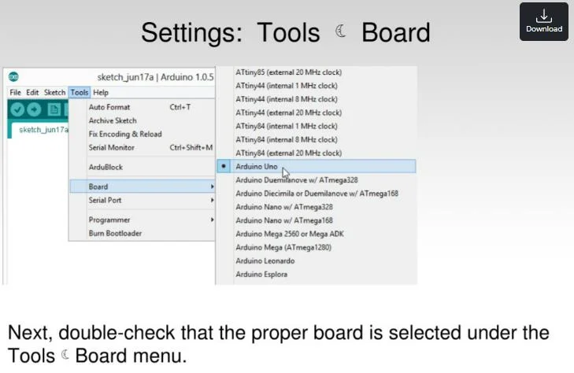
터틀봇메내퓰레이터 참고 아두이노
터틀봇메내퓰레이터 참고 아두이노
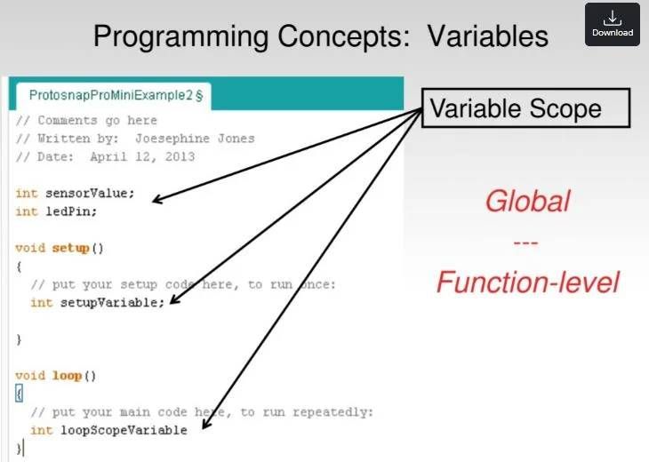
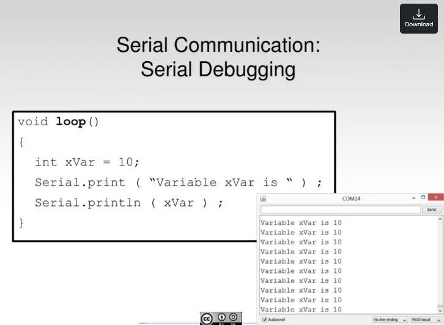
터틀봇메내퓰레이터 참고 스테핑모터, 컨베이 벨트 "43HD4027-02"는 스테핑 모터 모델명으로, 이 모터는 일반적으로 정밀한 위치 제어가 필요한 애플리케이션 에서 사용됩니다. 스테핑 모터는 각 도별로 일정한 회전 각만큼 이동할 수 있어 정밀한 제어가 가능합니다.
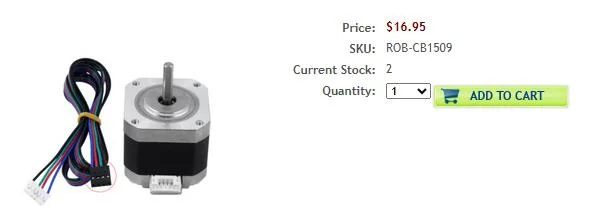
터틀봇메내퓰레이터 참고 스테핑모터, 컨베이 벨트 스테퍼 모터의 속도 제어 회전 속도는 펄스 수의 밀도로 제어합니다. 1펄스로 1기준 스텝 각이 회전하는 경우, 1초에 10펄스를 보내는 것이, 1초 에 1펄스를 보내는 것보다 1초의 회전한 각도가 크다. 그래 서 펄스의 주파수가 높으면 회전 속도가 빠릅니다.
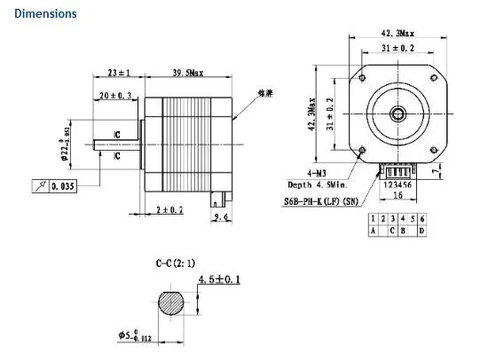
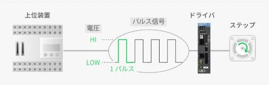
터틀봇메내퓰레이터 참고 스테핑모터, 컨베이 벨트
터틀봇메내퓰레이터 참고 스테핑모터, 컨베이 벨트
define PIN_ENA 8¶
// Enable pin on the driver (optional if you need to control enable state)
define PIN_DIR 9¶
// Direction pin (controls motor direction)
define PIN_PUL 10 // Pulse pin (sends step signals to the driver)¶
int stepDelay = 1000; // Delay between steps in microseconds (adjust motor speed) void setup() { // Set the pins as outputs pinMode(PIN_ENA, OUTPUT); pinMode(PIN_DIR, OUTPUT); pinMode(PIN_PUL, OUTPUT); // Enable the driver (assuming active low for enable pin) digitalWrite(PIN_ENA, LOW); // LOW typically enables the driver (check your driver datasheet) // Set initial direction (optional) digitalWrite(PIN_DIR, HIGH); // HIGH for one direction, LOW for the opposite direction } void loop() { // Rotate the motor in one direction for (int i = 0; i < 2000; i++) { // 2000 steps for one full rotation (adjust based on your motor's step count) digitalWrite(PIN_PUL, HIGH); // Create a pulse delayMicroseconds(stepDelay); // Wait for step duration digitalWrite(PIN_PUL, LOW); // End the pulse delayMicroseconds(stepDelay); // Wait for step duration } // Change direction after one rotation digitalWrite(PIN_DIR, !digitalRead(PIN_DIR)); // Reverse direction delay(1000); // Wait for a second before changing direction }
터틀봇메내퓰레이터 참고 초음파 센서
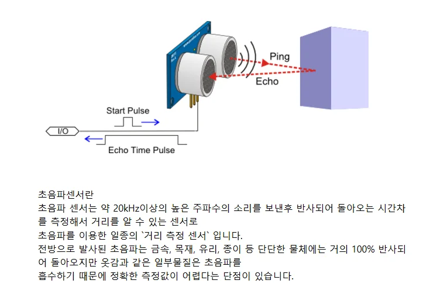
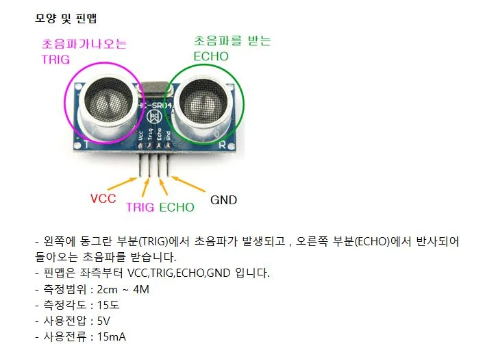
터틀봇메내퓰레이터 참고 초음파 센서
define TRIG 9 //TRIG 핀 설정 (초음파 보내는 핀)¶
define ECHO 8 //ECHO 핀 설정 (초음파 받는 핀)¶
void setup() { Serial.begin(9600); //PC모니터로 센서 값을 확인하기 위해서 시리얼 통신을 정의해 줍니다.
pinMode(TRIG, OUTPUT); pinMode(ECHO, INPUT); } void loop() { long duration, distance; digitalWrite(TRIG, LOW); delayMicroseconds(2); digitalWrite(TRIG, HIGH); delayMicroseconds(10); digitalWrite(TRIG, LOW); duration = pulseIn (ECHO, HIGH); //물체에 반사되어 돌아온 초음파의 시간을 변수에 저장합니다. //34000*초음파가 물체로부터 반사되어 돌아오는 시간 /1000000 / 2(왕복 값이 아니라 편도 값이기 때문에 나누기2를 해 줍니다.) //초음파 센서의 거리 값이 위 계산 값과 동일하게 Cm로 환산되는 계산 공식 입니다. 수식이 간단해지도록 적용했습니다. distance = duration * 17 / 1000; //PC모니터로 초음파 거리 값을 확인하는 코드 입니다. Serial.println(duration ); //초음파가 반사되어 돌아오는 시간을 보여 줍니다. Serial.print("\nDIstance : "); Serial.print(distance); //측정된 물체로부터 거리값(cm값)을 보여 줍니다. Serial.println(" Cm"); delay(1000); //1초마다 측정 값을 보여 줍니다. }
터틀봇메내퓰레이터 참고 아루코마커
터틀봇메내퓰레이터 참고 아루코마커(ArUco marker) 로봇 비전 혹은 컴퓨터 비전에서 많이 사용하는 마커이다. QR 코드처럼 우리가 카메라로 아루코마커를 인식, 아루코마커가 가지고 있는 ID를 반환받아서 읽을 수 있다. 인식한 아루코마커의 위치와 각도에 따라서 x, y, z축 방향으로의 위치와 회전 각도를 계산할 수 있다. aruco_pos_rot.py
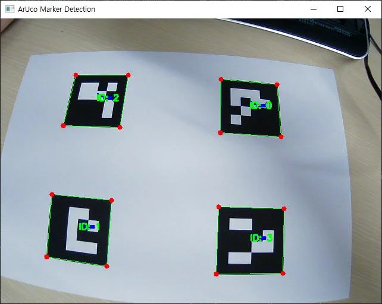
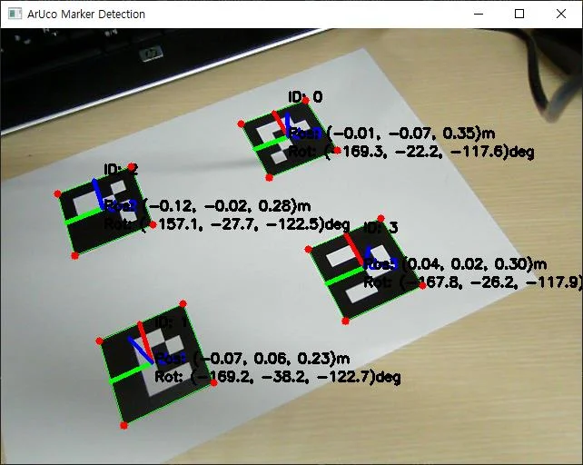
터틀봇메내퓰레이터 참고 기타 개발 지원 도구 아루코마커가 50mm임을 기준으로 각 아루코마커가 카메라의 중심으로 얼마나 떨어져 있고 회전되어 있는지 확인 할 수 있다. 물론 아주 정확하지는 않지만, 약간의 오차를 가지고 위치와 회전 각도를 받을 수 있다. aruco_dist_pos_rot.py 코드 공유
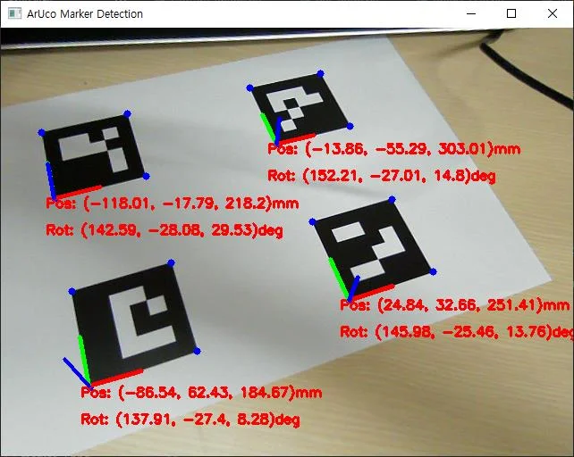
터틀봇메내퓰레이터 참고 카메라 켈리 브레이 션 위치에 따라 카메라 랜즈의 굴곡에 따른 왜곡 현상 이 과정은 일반적으로 체스 보드 패턴을 사용하여 여러 각도에서 이미지를 촬영하고, 이를 통해 카메라 매트릭스를 구하는 방식으로 진행됩니다. 카메라 캘리브 레이 션을 위해서는 보통 OpenCV를 사용하여 카메라의 내부 파라미터(초점 거리, 왜곡 계수 등)를 추정
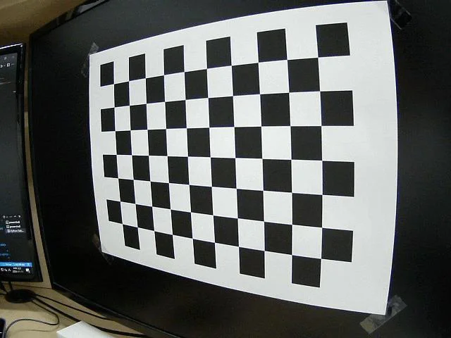
터틀봇메내퓰레이터 참고 카메라 켈리 브레이 션 카메라 파라미터 1.카메라 렌즈 시스템의 내부 파라미터(Internal parameters): 초점 거리 (focal length), 광학 중심 (optical center), 렌즈의 방사 왜곡 계수 (radial distortion coefficients of the lens) 2.외부 파라미터(External parameters): 시계 좌표계에 대한 카메라의 방향, 회전, 이동 체커 보드 우리는 카메라 캘리브 레이 션을 위해서 체커 보드(checkerboard pattern)를 사용할 것이다. 해당 사이트에서 체커 보드 패턴을 만들고 간단히 출력할 수 있다. https://markhedleyjones.com/projects/calibration-checkerboard-collection
터틀봇메내퓰레이터 참고 카메라 켈리 브레이 션 -10x7 체커 보드 패턴(내부 코너는 9x6)에서 각 사각형이 20mm인 체커 보드를 사용합니다. -지정된 폴더에서 체커 보드 이미지를 로드합니다. -각 이미지에서 체커 보드 코너를 감지합니다. -감지된 코너를 사용하여 카메라 캘리브 레이 션을 수행합니다. -카메라 행렬(intrinsic parameters)과 왜곡 계수를 계산합니다. -캘리브 레이 션 결과를 파일로 저장합니다. -선택적으로 테스트 이미지의 왜곡을 보정합니다. Camera_calibration_captures.py Camera_calibration.py Camera_test.py Camera_test_calibrationed.py
터틀봇메내퓰레이터 참고 카메라 켈리 브레이 션 https://darkpgmr.tistory.com/32
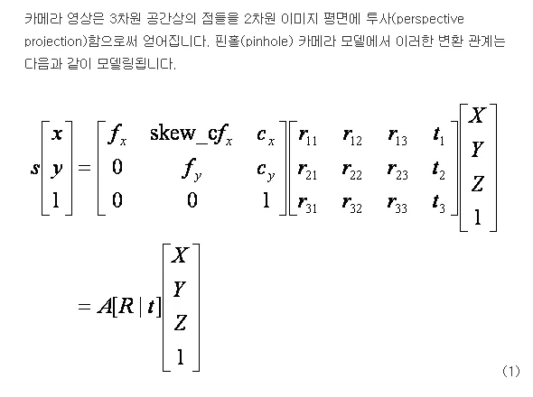
터틀봇메내퓰레이터 참고 카메라 켈리 브레이 션
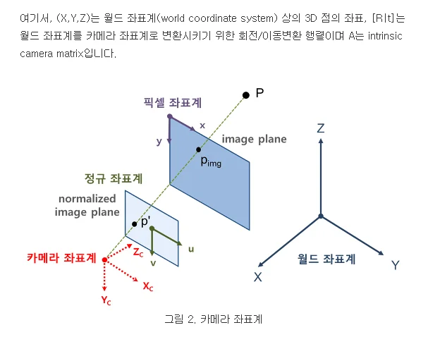
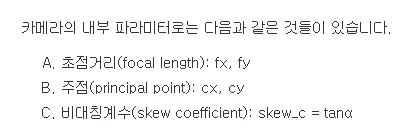
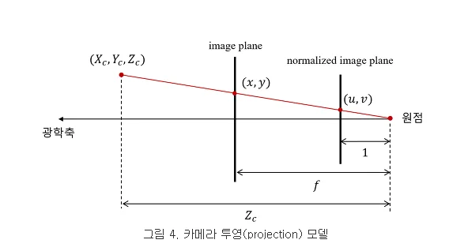
터틀봇메내퓰레이터 참고 켈리 브레이 션
터틀봇메내퓰레이터 참고 아로크마커 생성 aruco_generate.py Aruco marker generate 웹 사이트 https://chev.me/arucogen/ https://fodi.github.io/arucosheetgen/ marker_id = 마커의 아이디 marker_size = 마커 크기(픽셀 또는 m) dict_type = 마커 종류와 id 갯수 (4X4,5X5,6X6, 250,500,1000)
터틀봇메내퓰레이터 참고 아로크마커 거리 추정 마커 id ,pose, rotation 추출 후 거리(distance)를 추정 정확한 거리를 위해서 카메라 calibration이 필요 aruco_run.py 실행 aruco_dict = cv2.aruco.getPredefinedDictionary(cv2.aruco.DICT_6X6_1000) OpenCV의 ArUco 라이브러리를 사용하여 ArUco 마커를 생성하거나 인식하기 위한 코드입니다. 1.cv2.aruco: OpenCV의 ArUco 모듈을 의미합니다. ArUco는 QR 코드와 유사한 방식으로 인식할 수 있는 작은 2D 마커입니다. 2.주로 증강 현실(AR)이나 로봇 비전에서 사용됩니다. 2.getPredefinedDictionary(): 이 함수는 OpenCV에서 미리 정의된 다양한 ArUco 마커 세트를 반환합니다. 3.사용자는 여러 종류의 마커 세트 중 하나를 선택할 수 있습니다. 이 함수는 마커들을 생성하거나 인식할 때 유용합니다. 3.cv2.aruco.DICT_6X6_1000: 이는 "6x6 크기의 1000개의 고유한 ArUco 마커" 세트를 의미합니다. 4.여기서 6x6은 각 마커의 비트 크기를 나타내며, 1000은 세트 내에서 제공되는 마커의 수를 의미합니다. 5.즉, 이 세트는 6x6 크기의 1000개의 서로 다른 ArUco 마커를 제공합니다.
터틀봇메내퓰레이터 참고 아로크마커 거리 추정 Marker ID: 8, Position: [ 0.30174336 -0.14219974 0.58847091], Rotation (Yaw, Pitch, Roll): (175.39, 4.25, -2.24), Distance: 0.68m Marker ID: 9, Position: [-0.3635388 -0.06435436 0.54939859], Rotation (Yaw, Pitch, Roll): (-173.50, -50.36, -11.39), Distance: 0.66m
터틀봇메내퓰레이터 참고 아로크마커 거리 추정 아로크마커 거리 추정 원리 -실제 마커 크기: 마커의 실제 크기(가령, 정사각형의 한 변의 길이)가 알려져 있어야합니다. -마커의 화면상 크기: -카메라에서 본 마커의 크기는 실제 크기와 카메라의 초점 거리, 마커와 카메라 사이의 거리에 따라 다르게 나타납니다. -삼각법: -삼각형의 기하학적 원리를 사용하여, 마커의 화면상 크기와 실제 크기, 그리고 카메라의 초점 거리로부터 거리를 계산합니다.
터틀봇메내퓰레이터 참고 아로크마커 거리 추정
!/usr/bin/env python3¶
import cv2 import numpy as np import os from ament_index_python.packages import get_package_share_directory import yaml import argparse import rclpy from rclpy.node import Node from sensor_msgs.msg import CompressedImage from std_msgs.msg import Float32, Int32 from aruco_msgs.msg import Marker, MarkerArray from cv_bridge import CvBridge 주요 라이브러리
- cv2, numpy: 이미지 처리와 수학 계산
- rclpy: ROS 2 파이썬 클라이언트 라이브러리
- sensor_msgs.msg.CompressedImage: 압축된 이미지 메시지
- aruco_msgs.msg.Marker, MarkerArray: ArUco 마커 정보 메시지
-
cv_bridge: ROS 이미지 OpenCV 이미지 변환
-
yaml: 카메라 캘리브 레이 션 파일 로딩 aruco_marker_detector.py 터틀봇메내퓰레이터 참고 아로크마커 거리 추정 def detect_markers(image, camera_matrix, dist_coeffs, marker_size): aruco_dict = cv2.aruco.getPredefinedDictionary(cv2.aruco.DICT_6X6_1000) parameters = cv2.aruco.DetectorParameters() detector = cv2.aruco.ArucoDetector(aruco_dict, parameters) corners, ids, _ = detector.detectMarkers(image) detect_data = [] if ids is not None: cv2.aruco.drawDetectedMarkers(image, corners, ids) rvecs, tvecs, _ = my_estimatePoseSingleMarkers(corners, marker_size, camera_matrix, dist_coeffs) if rvecs is not None and tvecs is not None: for rvec, tvec, marker_id in zip(rvecs, tvecs, ids): rot_mat, _ = cv2.Rodrigues(rvec) yaw, pitch, roll = rotationMatrixToEulerAngles(rot_mat) marker_pos = np.dot(-rot_mat.T, tvec).flatten() distance = np.linalg.norm(tvec) detect_data.append([marker_id, marker_pos, (yaw, pitch, roll), distance]) return image, detect_data detect_markers()
-
카메라 영상에서 ArUco 마커 검출
- 마커 ID, 위치, 회전 각, 거리 등을 추출
- cv2.solvePnP()을 통해 자세 추정
- rotationMatrixToEulerAngles()로 Euler 각도 추출 aruco_marker_detector.py
터틀봇메내퓰레이터 참고 아로크마커 거리 추정 def my_estimatePoseSingleMarkers(corners, marker_size, mtx, distortion): marker_points = np.array([[-marker_size / 2, marker_size / 2, 0], [marker_size / 2, marker_size / 2, 0], [marker_size / 2, -marker_size / 2, 0], [-marker_size / 2, -marker_size / 2, 0]], dtype=np.float32) rvecs = [] tvecs = [] for c in corners: _, R, t = cv2.solvePnP(marker_points, c, mtx, distortion, False, cv2.SOLVEPNP_IPPE_SQUARE) rvecs.append(R) tvecs.append(t) return rvecs, tvecs, [] my_estimatePoseSingleMarkers()
- 마커의 각 코너 좌표와 실제 크기를 바탕으로 자세 추정 aruco_marker_detector.py
터틀봇메내퓰레이터 참고 아로크마커 거리 추정 def rotationMatrixToEulerAngles(R): sy = np.sqrt(R[0,0] * R[0,0] + R[1,0] * R[1,0]) singular = sy < 1e-6 if not singular: x = np.arctan2(R[2,1], R[2,2]) y = np.arctan2(-R[2,0], sy) z = np.arctan2(R[1,0], R[0,0]) else: x = np.arctan2(-R[1,2], R[1,1]) y = np.arctan2(-R[2,0], sy) z = 0 return np.degrees(x), np.degrees(y), np.degrees(z) rotationMatrixToEulerAngles()
- 회전 행렬을 Euler 각도(roll, pitch, yaw)로 변환 aruco_marker_detector.py
터틀봇메내퓰레이터 참고 아로크마커 거리 추정 def load_camera_parameters(yaml_file): package_share_directory = get_package_share_directory('aruco_marker_detect') calibration_file = os.path.join(package_share_directory, 'config', yaml_file) with open(calibration_file, 'r') as f: data = yaml.safe_load(f) camera_matrix = np.array(data["camera_matrix"]["data"], dtype=np.float32).reshape(3, 3) dist_coeffs = np.array(data["distortion_coefficients"]["data"], dtype=np.float32) return camera_matrix, dist_coeffs load_camera_parameters()
- ROS 패키지 내 YAML 파일에서 카메라 캘리브 레이 션 파라미터를 로드 aruco_marker_detector.py
터틀봇메내퓰레이터 참고 아로크마커 거리 추정 class ArucoMarkerDetector(Node): def init(self): super().init('aruco_marker_detector') self.subscription = self.create_subscription( CompressedImage, 'image_raw/compressed', self.listener_callback, 10) self.marker_publisher = self.create_publisher(MarkerArray, 'detected_markers', 10) self.bridge = CvBridge() self.marker_size = 0.04 self.camera_matrix, self.dist_coeffs = load_camera_parameters('calibration_params.yaml') def listener_callback(self, msg): np_arr = np.frombuffer(msg.data, np.uint8) frame = cv2.imdecode(np_arr, cv2.IMREAD_COLOR) frame, detect_data = detect_markers(frame, self.camera_matrix, self.dist_coeffs, self.marker_size) if len(detect_data) == 0: self.get_logger().debug("No markers detected") else: closest_marker = min(detect_data, key=lambda x: x[3]) self.get_logger().debug(f"Closest Marker ID: {closest_marker[0]}, Distance: {closest_marker[3]:.2f}m") marker_array_msg = MarkerArray() for marker in detect_data: marker_msg = Marker() marker_msg.id = int(marker[0]) marker_msg.pose.pose.position.x = marker[1][0] marker_msg.pose.pose.position.y = marker[1][1] marker_msg.pose.pose.position.z = marker[1][2] marker_msg.pose.pose.orientation.x = marker[2][2] marker_msg.pose.pose.orientation.y = marker[2][1] marker_msg.pose.pose.orientation.z = marker[2][0] marker_array_msg.markers.append(marker_msg) self.marker_publisher.publish(marker_array_msg) cv2.imshow('Detected Markers', frame) cv2.waitKey(1) 클래스 ArucoMarkerDetector(Node) 주요 역할:
- /image_raw/compressed 주제를 구독하여 이미지를 받아 옴
- 마커 검출 후 가장 가까운 마커 정보를 로그로 출력
- 검출된 마커 정보를 MarkerArray로 detected_markers 주제에 퍼블리시 aruco_marker_detector.py
터틀봇메내퓰레이터 참고 아로크마커 거리 추정 def main(args=None): rclpy.init(args=args) aruco_marker_detector = ArucoMarkerDetector() rclpy.spin(aruco_marker_detector) aruco_marker_detector.destroy_node() rclpy.shutdown() if name == "main": parser = argparse.ArgumentParser(description='Detect ArUco markers.') parser.add_argument('--marker_size', type=float, default=0.04, help='Size of the ArUco markers in meters.') args = parser.parse_args() ArucoMarkerDetector.marker_size = args.marker_size main() 실행 흐름 (main() 함수) 1.ROS 2 초기화 2.ArucoMarkerDetector 노드 실행 3.노드 종료 시 종료 처리 aruco_marker_detector.py
터틀봇메내퓰레이터 참고 터틀봇메니퓰레이터
터틀봇메내퓰레이터 참고 터틀봇와플메니퓰레이터시작, 종료 1. Open CR을 먼저 키고 2. jetson orin을 킨다 1. robot에서 sudo shutdown now 를 실행하고 2. jetson orin의 스위치를 반드시 끄고 3. Open CR을 끈다
터틀봇메내퓰레이터
참고
SSH 로봇 접속
ssh 연결하기
ssh -X rokeyOO@
- vscode 확장(ctrl+shift+X)탭을 누른다
-
마켓에서 ssh를 치고,Remote-SSH를 설치 VSCode 로봇 접속
-
원격 탐색기
터틀봇메내퓰레이터 참고 VSCode 로봇 접속
- 새 원격을 누른다
- ssh -X rokeyO@
입력후 enter - ssh 창에 새로 고침 한 이후에
- 자신이 접속할 창의 폴더를 누른다
터틀봇메내퓰레이터 참고 프로그램 수행 노드 목록 I. ros2 launch turtlebot3_manipulation bringup hardware.launch.py II. compressed_image_pub.py III. yolo_detect.py IV. aruco_marker_detect.py I. ros2 launch turtlebot3_manipulation moveit_config moveit_core.launch.py II. turtlebot_arm_controller III. manager_node IV. qt_qui.py V. conveyor_node
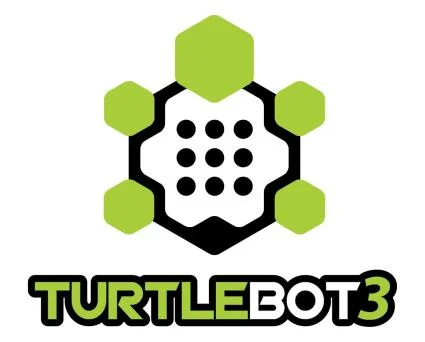
터틀봇메내퓰레이터 참고 Aruco marker 거리 추정 후robot 주행 터 틀 봇 수행 1. ros2 launch turtlebot3_manipulation_bringup hardware.launch.py 2. ros2 launch aruco_yolo aruco_move.launch.py (compressed_image_pub :영상 데이터를 압축 전송 aruco_detect_marker: 압축된 영상 데이터에서 aruco marker를 인식하여 pose와 rotation을 추출 aruco_move: 받은 pose.z 만큼 주행) Node_graph 수행해 보기 Node_graph(aruco_move.launch.py) Node_graph(aruco_yolo.launch.py)
터틀봇메내퓰레이터 참고 Moveit 이해 MoveIt의 역할: 로봇 암(Manipulator) 모션 플래닝 및 제어 ROS2 기반에서 동작하는 모션 플래닝 프레임워크 사용 목적: 경로 계획(Path Planning), 역 기구학(IK), 충돌 회피(Collision Avoidance), 센서 통합 등 https://moveit.picknik.ai/main/index.html 코드 분석 필요
터틀봇메내퓰레이터 참고 Moveit 수행 로봇에서 ros2 launch turtlebot3_manipulation_bringup hardware.launch.py pc에서 ros2 launch turtlebot3_manipulation_moveit_config moveit_core.launch.py Moveit 키보드 설정
- turtlebot3_manipulation_xyz_limit.py ros2 topic list export 에러… w 전진 s 후진 a 좌회전 d 우회전 y joint1 + h joint1 - u joint2 + j joint2 - i joint3 + k joint3 - o joint4 + l joint4 -
- 그리퍼 close = 그리퍼 open
터틀봇메내퓰레이터 참고 Moveit 수행 rviz 화면에 보이는 manipulator와 lidar 위치가 실제와 다르기 때문에 위치를 변경해야합니다 터틀봇메내퓰레이터 참고 로봇 모델링 체크 ~/turtlebot3_ws/src/turtlebot3_manipulation/turtlebot3_manipulation_description/urdf ~/turtlebot3_ws/src/turtlebot3_manipulation/turtlebot3_manipulation_description/urdf/turtlebot3_manipulation.urdf.xacro manipulation을 x축으로 0.092만큼 전진 시킵니다
터틀봇메내퓰레이터 참고 Moveit 수행 ~/turtlebot3_ws/src/turtlebot3_manipulation/turtlebot3_manipulation_description/urdf/turtlebot3_waffle_pi.urdf.xacro scan을 x축으로 0.076만큼 후진 시킵니다 터틀봇메내퓰레이터 참고 Moveit 수행 manipulation과 scan 위치가 달라지는지 확인하세요
터틀봇메내퓰레이터 참고 정밀도 향상을 위한 옵션 확인 kinematics.yaml 내용 turtlebot3_manipulation.srdf ~/turtlebot3_ws/src/turtlebot3_manipulation/turtlebot3_manipulation_movit_config/config
터틀봇메내퓰레이터 참고 Moveit 아키텍처 Moveit control(pc) manager_node srv_call_test turtlebot_arm_ controller.cpp Moveit cmd posename waypoint move_gruop_ interface plan request 작성 turtlebot_cosmo_interface
터틀봇메내퓰레이터 참고 Moveit 아키텍처
-
turtlebot_cosmo_interface.zip ~/turtlebot3_ws/src/안에 해당 패키지 압축 풀기 (pc) cd ~/turtlebot3_ws colcon build --packages-select turtlebot_cosmo_interface
-
turtlebot_moveit.zip ~/turtlebot3_ws/src (pc) cd ~/turtlebot3_ws/ colcon build --packages-select turtlebot_moveit
터틀봇메내퓰레이터 참고 Moveit 아키텍처 압축 풀기 turtlebot_cosmo_interface.zip 패키지 turtlebot_cosmo_interface 페키지 빌드 colcon build --packages-select turtlebot_cosmo_interface 압축 풀기 turtlebot_moveit.zip 페키지 빌드 colcon build --packages-select turtlebot_moveit 인터페이스 페키지: MoveitController.srv 암 컨트롤러: turtlebot_arm_controller.cpp 코드 분석
터틀봇메내퓰레이터 참고 Moveit이용메니퓰레이터조작 준비 Robot: Ros2 launch turtlebot3_manipulation_bringup hardware.launch.py PC:
- ros2 launch turtlebot3_manipulation_moveit_config moveit_core.launch.py
-
ros2 run turtlebot_moveit turtlebot_arm_controller 실행
-
ros2 run turtlebot_moveit task.py cd turtlebot_moveit/scripts/ python3 srv_call_test.py python3 task.py
터틀봇메내퓰레이터 참고 암 컨트롤러: turtlebot_arm_controller.cpp 0: 메내퓰 레이 터를 파란색( 또는 빨간색) 상자를 먼저 인식하고 yolo 보는 방향으로 좌표 이동 1: srdf에 저장된 arm의 joint 값이동 2: srdf에 저장된 gripper의 joint 값이동 3: 보라색 상자를 yolo 보는 방향으로 좌표 이동 4: 좌표와 방향을 전부 주고 좌표 이동 9: 해당 좌표 출력 파이썬에서 암 컨트롤러 서비스 호출 예시(…yolo.py 명령 코드 실제 코드 분석
터틀봇메내퓰레이터 참고 Moveit 아키텍처 cmd 1을 주고 “box_up_02” 엑션 cmd 1을 주고 “box_up_02” 엑션 cmd 1을 주고 “box_up_02” 엑션 cmd 9을 주고 좌표를 출력 task.py 예제 - 1
터틀봇메내퓰레이터 참고 Moveit 아키텍처
- waypoint를 줄 position과 orientation을 줍니다
- cmd 4를 주고 해당 waypoint로 이동을 지시합니다
- cmd 9를 주고 좌표를 출력합니다 task.py 예제 - 2
터틀봇메내퓰레이터 참고 기타 개발 지원 도구 전진 방향이 x + 좌는 y + 우는 y - z는 높이 x + y + y -
터틀봇메내퓰레이터 참고 기타 개발 지원 도구 robot_ y + 0.08 ±0.01 robot_ y
- 0.08 ±0.01 robot_x +0.15 ±0.01 robot_x +0.22 ±0.01 터틀봇메내퓰레이터 참고 Moveit 아키텍처 task.py 예제 - 3 left_down x + 방향으로 15cm 만큼 y + 방향으로 8cm 만큼 직접 좌표 이동하는 코드입니다
터틀봇메내퓰레이터 참고 기타 개발 지원 도구 터틀봇메내퓰레이터 참고 기타 개발 지원 도구 task.py 예제 - 4 left_up x + 방향으로 22cm 만큼 y + 방향으로 8cm 만큼 직접 좌표 이동하는 코드입니다 터틀봇메내퓰레이터 참고 기타 개발 지원 도구 터틀봇메내퓰레이터 참고 기타 개발 지원 도구 task.py 예제 - 5 right_down x + 방향으로 15cm 만큼 y - 방향으로 8cm 만큼 직접 좌표 이동하는 코드입니다
터틀봇메내퓰레이터 참고 기타 개발 지원 도구 터틀봇메내퓰레이터 참고 기타 개발 지원 도구 task.py 예제 - 6 right_up x + 방향으로 22cm 만큼 y + 방향으로 8cm 만큼 직접 좌표 이동하는 코드입니다
터틀봇메내퓰레이터 참고 기타 개발 지원 도구 task7은 yolo 데이터가 필요합니다 camera_home 위치에 간 다음 ros2 launch aruco_yolo.launch.py(robot) ros2 launch turtlebot3_manipulation_moveit_config moveit_core.launch.py(pc) ros2 run turtlebot_moveit turtlebot_arm_controller python3 task_3.py
터틀봇메내퓰레이터 참고 기타 개발 지원 도구 YOLO Task 설명
- srdf에 저장된 camera_home 위치로 갑니다
- 그 위치에서 yolo로 찾은 좌표로 robot을 이동시킵니다
- gripper로 잡았으면 다시 수직으로 일어납니다
- srdf에 저장된 conveyor에 올리는 행동을 시킵니다
- 작업이 완료되었는지 확인하고 다시 camera_home 위치로 돌 아 갑니다.
터틀봇메내퓰레이터 참고 기타 개발 지원 도구 YOLO 코드 설명 pose_array에 들어가는 3가지 인자는 base link 원점 좌표에서 gripper의 좌표 x,y,z가 된다 0.137496이란 수치는 m 단위이며 13.7496cm만큼 x축 +방향으로 가 있는 것 z축은 높이이므로 yolo로 찾은 좌표에 12.2354cm 높이에 간 상태에서 8.7354cm 높이로 내려가는 것 터틀봇메내퓰레이터 참고 기타 개발 지원 도구 yolo로 y축이 robot 기준 으로는 x축으로 들어갑 니 다 yolo로 x축이 robot 기준 으로는 y축이며 yolo의 +방향과 robot 축 기준 방향이 달라서 yolo값에 -를 곱해 줍니다 yolo_ x + yolo_ x - yolo_ y + yolo_ y - 터틀봇메내퓰레이터 참고 기타 개발 지원 도구 aruco_yolo.launch task_3~7 turtlebot_arm_control ler moveit yolo/detect_info 위치는 camera_ho me
터틀봇메내퓰레이터 참고 기타 개발 지원 도구 하지만 보라색 상자 잡는 건 좌표 축이 달라집니다
터틀봇메내퓰레이터 참고 기타 개발 지원 도구 task.py 예제 - 8 x + 방향으로 1cm 만 큼 y - 방향으로 29cm 만 큼 z + 방향으로 26.5cm 만큼 직접 좌표 이동하는 코 드입니다 터틀봇메내퓰레이터 참고 기타 개발 지원 도구 aruco_yolo.launch task_9 turtlebot_arm_controll er moveit yolo/detect_info 위치는 box_home_ 터틀봇메내퓰레이터 참고 기타 개발 지원 도구 cmd 1을 주고 “box_home_01”행 동을 합니다 cmd 2를 주고 gripper에게 “open”행동을 시킵니다 cmd 3를 주고 pose_array를 waypoint로 주어 해당 좌표로 이 동시킵니다 cmd 3를 주고 pose_array를 waypoint로 주어 해당 좌표로 이 동시킵니다 cmd 2를 주고 gripper에게 “close”행동을 시킵니다 cmd 1을 주고 “box_up_01”행동 을 합니다 task.py 예제 - 9 터틀봇메내퓰레이터 참고 기타 개발 지원 도구 실습 Aruco marker로 이동하고 Moveit으로 상자 이송 코드 작성 simple_manager_node.py 다운로드
터틀봇메내퓰레이터 참고 기타 개발 지원 도구 manager_node를 완성하기 전에 해야할 일
- task_7.py(빨간색 상자, 파란색 상자 잡기)가 정상적으로 작동하는 것을 완성
- task_9.py(보라색 상자)가 정상적으로 작동하는 것을 완성
- 해당 logic을 manager_node yolo_arm_control, purple_arm_control에 적용
터틀봇메내퓰레이터 참고 기타 개발 지원 도구 최종 실행 명령어 정리 ros2 launch turtlebot_manipulation_bringup hardware.launch.py(robot) ros2 launch aruco_yolo aruco_yolo.launch.py(robot) ros2 launch turtlebot3_manipulation_moveit_config moveit_core.launch.py(pc) ros2 run turtlebot_moveit turtlebot_arm_controller(pc) python3 simple_manager_node.py(pc)
- (turtlebot_moveit/scripts/폴더 안에서 실행) qt_gui
터틀봇메내퓰레이터 참고 기타 개발 지원 도구 Aruco 전진 거리 : 25cm(Aruco marker에서부터 camera까지) Aruco 후진 거리 : 117cm(Aruco marker에서부터 camera까지) yolo task 거리: 22.4cm(box 윗 면에서부터 camera 까지)
터틀봇메내퓰레이터 참고 기타 개발 지원 도구 만약 qt_gui에서 이미지를 안 보겠다 면 image 받는 부분을 주석 처리
터틀봇메내퓰레이터 참고 기타 개발 지원 도구 ex) ros2 topic echo /joint_states >> a.txt 1.ros2 topic echo /joint_states는 ROS 2 토픽 /joint_states를 구독하여 해당 토픽의 데이터를 출력합니다. 2./joint_states는 일반적으로 로봇의 관절 상태(joint positions, velocities 등)에 대한 정보를 포함하는 메시지입니다. 2.>> a.txt는 표준 출력의 내용을 a.txt 파일에 추가합니다. 파일이 이미 존재할 경우, 기존 내용을 유지하고 새로운 데이터를 파일 끝에 추가합니다. 따라서 이 명령은 ROS 2에서 특정 토픽 데이터를 파일로 기록할 때 유용합니다. 이를 활용하면 기록된 데이터를 분석하거나, 다른 프로세스에서 처리할 수 있습니다.
터틀봇메내퓰레이터 참고 기타 개발 지원 도구 aruco_yolo에 자신의 pt파일을 적용시키고 싶으면
- aruco_yolo/models에 자신의 pt파일을 넣는다
- aruco_yolo의 setup.py로 간다
터틀봇메내퓰레이터 참고 기타 개발 지원 도구
- setup.py에서 자신의 pt파일 명을 적는다.
터틀봇메내퓰레이터 참고 기타 개발 지원 도구
- aruco_yolo패키지 폴더 안에 yolo_detector.py에 들어가서 model_path를 수정한다
- turtlebot3_ws 에서 colcon build --packages-select aruco_yolo 로 빌드
터틀봇메내퓰레이터 참고 기타 개발 지원 도구 마찬가지로 aruco에 적용될 calibration 값을 변경하려면 aruco_yolo에 config 파일에 들어가서 수치 변경 후 colcon build를 한다
터틀봇메내퓰레이터 참고 로봇에서 실행되어야하는 것들
- ros2 launch turtlebot3_manipulation_bringup hardware.launch.py
- ros2 launch aruco_yolo aruco_yolo.launch
- ros2 launch turtlebot3_manipulation_moveit_config moveit_core.launch.py(pc)
- ros2 run turtlebot_moveit turtlebot_arm_controller(pc)
- python3 simple_manager_node.py(pc) (turtlebot_moveit/scripts/폴더 안에서 실행) pc에서 실행되어야하는 것들
터틀봇메내퓰레이터 참고 기타 개발 지원 도구
터틀봇메내퓰레이터 참고 피지컬 터 틀 봇 사용
터틀봇메내퓰레이터 참고 로봇 연결 및 로봇 조작 순서
-
Turtlebot3_manipulation을 켤때 1.Opencr을 먼저 켜세요 2.Jetson orin switch를 켜세요
-
jetson orin도 일종의 컴퓨터 입니다 Hdmi cable로 monitor와 연결하고 usb port에 usb hub와 연결한 다음 keyboard와 mouse를 연결하세요
- Jetson orin에 ubuntu 계정 login passward는 : rokey1234
-
오른쪽 상단 wifi setting에 들어갑니다. 거기서 ‘Rokey-Ap-2’ wifi에 세팅합니다 passward: rokey12345
-
ctrl+alt+t를 눌러 terminal을 열고 ifconfig를 칩니다 ifconfig 그 다음 로봇의 ip를 확인합니다 예) 172.30.1.XX - (XX는 할당된 IP마 다 다릅니다) terminal 창에서 jetson orin의 컴퓨터 명도 확인합니다 예) roekyXX@생략 - XX는 로봇마다 다른 숫자입니다
-
5번에 찾은 컴퓨터 명과 ip는 노트북에서 ssh 연결하기 위한 셋 업니다 단 ssh는 서로 같은 wifi 공간에서 사용해야하는 본인 pc도 ‘Rokey-Ap-2’ wifi에 세팅합니다 그 다음 노트북에 terminal을 연 다음 다음과 같이 입력하세요 ssh -X rokeyOO@172.30.1.XX 만약 연결이 안 되는 경우 실제 통신이 되는지 확인해 봅니다 ping 172.30.1.XX (XX는 찾은 ip숫자)
터틀봇메내퓰레이터 참고 로봇 연결 및 로봇 조작 순서
-
ssh로 처음 연결하면 key를 받겠냐는 메세지가 나옵니다 거기서 yes를 입력하세요 그 다음 접속하려는 계정의 passward를 물어 봅니다 연결한 로봇의 passward와 동일합니다 passward: rokey1234
-
로봇에서 실행하는 robot을 bringup 하는 명령어 입니다 ros2 launch turtlebot3_manipulation_bringup hardware.launch.py
-
다른 터미널 창을 열고 pc에서 로봇에 ssh 연결을 합니다 ssh -X rokeyOO@172.30.1.XX password:rokey1234
-
로봇에서 camera를 활성화하고 yolo와 aruco를 동시에 실행하는 launch 입니다 ros2 launch aruco_yolo aruco_yolo.launch.py
-
ssh로 실행한 ros도 확실하게 꺼 주셔야합니다 ssh로 연결된 로봇 터미널에서 활성된 ros 창에서 ctrl+c 누르고 꺼지는 게 확인될 때까지 기다리세요
-
ssh연결을 그냥 끊고 싶으면 exit 을 ssh로 연결한 로봇 터미널에 치세요 ssh로 연결한 로봇을 종료시키고 싶으면 sudo shutdown now 을 ssh로 연결한 로봇 터미널에 치세요 sudo로 실행한 명령어 이기에 로봇 password를 요구할 겁니다 password:rokey1234
-
Turtlebot3_manipulation을 끌때 1.sudo shutdown now로 ubuntu를 제대로 종료한다 2.jetson orin switch를 종료시킨다 3.opencr을 종료시킨다
터틀봇메내퓰레이터 참고 리눅스 노트북 설치 가이드 참고 사이트 turtlebot3_manipulation emanual: https://emanual.robotis.com/docs/en/platform/turtlebot3/manipulation/#turtlebot3-with-openmanipulator turtlebot3_manipulation git 주소: https://github.com/ROBOTIS-GIT/turtlebot3_manipulation 강의 참고용 드라이브:https://tinylink.net/JfziW 이 과정이 완료되었을 때 turtlebot3_ws/src에 들어 있어야하는 패키지는 다음과 같습니다 turtlebot3_manipulation turtlebot_cosmo_interface turtlebot_moveit
-
moveit과 관련된 ros2 package를 설치합니다 sudo apt install ros-humble-dynamixel-sdk ros-humble-ros2-control ros-humble-ros2-controllers ros-humble-gripper-controllers ros-humble-moveit* ros-humble-aruco-msgs
-
만약 pc에 turtlebot3_ws가 home 디렉토리에 없을 경우 workspace 폴더를 만드는 절차입니다 home 디렉토리에 있다면 무시하세요 mkdir -p turtlebot3_ws/src
-
turtlebot3_manipulation 패키지를 turtlebot3_ws안에 빌드하기 위해서 해당 workspace의 src 폴더로 이동합니다 cd ~/turtlebot3_ws/src/
터틀봇메내퓰레이터 참고 리눅스 노트북 설치 가이드
-
turtlebot3_manipulation 패키지를 다운 받습니다 git clone -b humble https://github.com/ROBOTIS-GIT/turtlebot3_manipulation.git
-
turtlebot3_manipulation 패키지를 빌드합니다 cd ~/turtlebot3_ws && colcon build --symlink-install
-
빌드된 패키지를 활성화 시킵니다 source install/setup.bash
-
실제 패키지가 제대로 빌드되었는지 확인합니다 ros2 pkg list | grep turtlebot3_manipulation
-
패키지가 빌드가 되었으면 moveit를 실행해 봅시다 ros2 launch turtlebot3_manipulation_moveit_config moveit_core.launch.py
-
두산 폴더에서 turtlebot_cosmo_interface.zip을 먼저 다운로드 합니다 링크:https://tinylink.net/JfziW 10.다운 받은 turtlebot_cosmo_interface.zip을 압축 해제하여 ~/turtlebot3_ws/src/안에 넣습니다 해당 패키지는 moveit 제어에 필요한 srv 등록용 패키지입니다 11.해당 패키지를 ~/turtlebot3_ws/src/안에 넣었으면 터미널에서 빌드를 해 줍니다 cd ~/turtlebot3_ws && colcon build --packages-select turtlebot_cosmo_interface
터틀봇메내퓰레이터 참고 기타 개발 지원 도구
-
빌드된 패키지를 활성화 시킵니다 source install/setup.bash
-
turtlebot_cosmo_interface가 제대로 빌드되었는지 확인합니다 ros2 interface show turtlebot_cosmo_interface/srv/MoveitControl
-
두산 폴더에서 turtlebot_moveit.zip을 먼저 다운로드 합니다 링크:https://tinylink.net/JfziW 15.다운 받은 turtlebot_moveit.zip을 압축 해제하여 ~/turtlebot3_ws/src/안에 넣습니다 해당 패키지는 서비스를 활성화해서 python clinet가 준 request를 moveit에 plan으로 변환하는 turtlebot_arm_controller.cpp가 있습니다 16.해당 패키지를 ~/turtlebot3_ws/src/안에 넣었으면 터미널에서 빌드를 해 줍니다 cd ~/turtlebot3_ws && colcon build --packages-select turtlebot_moveit 현재 launch 폴더가 없는 상태인데 빌드하면서 오류가 나는 것 같습니다 turtlebot_moveit패키지의 CMakeLists.txt에서 맨 아래에 가 보시면 launch가 명시되었는데 삭제하시고 저장한 다음 빌드가 정상적으로 작동 될 것입니다
-
빌드된 패키지를 활성화 시킵니다 source install/setup.bash
-
turtlebot_cosmo_interface가 제대로 빌드되었는지 확인합니다 ros2 pkg list | grep turtlebot_moveit
터틀봇메내퓰레이터 참고 기타 개발 지원 도구 Aruco_yolo 패키지 설명 aruco_yolo(package) ㄴ aruco_yolo(src 폴더) ㄴ__pycache__ ㄴ__init__.py ㄴaruco_detector.py (영상 데이터를 수신한 다음 aruco marker detect 한 이후 aruco marker data를 publish) ㄴaruco_move.py(detected_marker topic을 수신해서 조건에 맞게 cmd_vel publish) ㄴcompressed_image_pub.py(영상 데이터를 publish) ㄴyolo_detector.py (영상 데이터를 수신한 다음 yolo를 이용하여 클래스 및 x,y 데이터 publish) ㄴconfig ㄴcalibration_params.yaml ㄴlaunch ㄴaruco_move.launch.py ㄴaruco_yolo.launch.py ㄴmodels ㄴyolov8s_trained.pt ㄴresource ㄴtest ㄴpackage.xml ㄴsetup.cfg ㄴsetup.py
터틀봇메내퓰레이터 참고 기타 개발 지원 도구 turtlebot_moveit 패키지 설명 turtlebot_moveit ㄴscripts ㄴ__pycache__ ㄴ__init__.py ㄴsimple_manager_node.py(manager_node 예시 코드) ㄴsrv_call_test.py(moveit_control 서비스에 요청하는 client 코드) ㄴtask.py(task 요청하는 예시 코드) ㄴsrc ㄴget_eef_pose.cpp (더 미 코드) ㄴturtlebot_arm_controller.cpp (move_control 서비스를 만들고 python에서 요청한 cmd,pose_name,waypoint를 수신하여 moveit에 plan을 execute하는 코드) ㄴturtlebot_moveit.cpp (더 미 코드) ㄴCMakeLists.txt ㄴpackage.xml turtlebot_cosmo_interface 패키지 설명 turtlebot_cosmo_interface ㄴsrv ㄴMoveitControl.srv ㄴCMakeLists.txt ㄴpackage.xml
터틀봇메내퓰레이터 참고 노트북 프로그램 설치 manual https://emanual.robotis.com/docs/en/platform/turtlebot3/manipulation/#turtlebot3-with-openmanipulator git https://github.com/ROBOTIS-GIT/turtlebot3_manipulation 1. sudo apt install ros-humble-dynamixel-sdk ros-humble-ros2-control ros-humble-ros2-controllers ros-humble-gripper-controll ers ros-humble-moveit* ros-humble-aruco-msgs 2. mkdir -p turtlebot3_ws/src 3. cd ~/turtlebot3_ws/src/ 4. git clone -b humble https://github.com/ROBOTIS-GIT/turtlebot3_manipulation.git 5. cd ~/turtlebot3_ws && colcon build --symlink-install 확인하기: cd ~/turtlebot3_ws/src/turtlebot3_manipulation ros2 pkg list | grep turtlebot3_manipulation
참고
터틀봇메내퓰레이터 참고 기타 개발 지원 도구
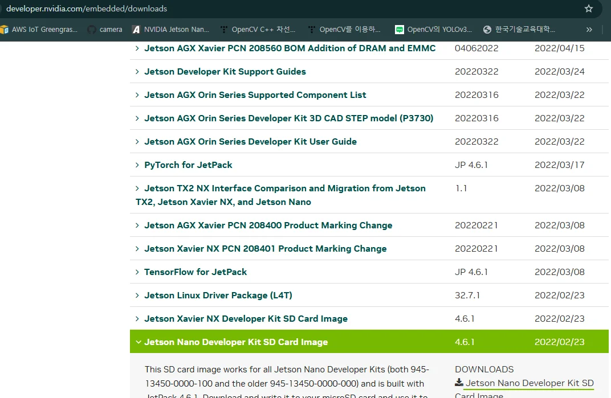
터틀봇메내퓰레이터 참고 task_7(red_blue).py ＜주요 기능 요약＞
- YOLO 결과 수신： /yolo/detected_info 토픽에서 YOLO가 인식한 객체 좌표를 수신하여 파싱＊
- 로봇 암 제어：YOLO 결과를 바탕으로 로봇 암이 해당 위치로 이동하여 집거나 내려놓는 작업 수행
- 키보드 인터페이스：키 입력을 통해 로봇 제어 및 보정(offset) 값 조정
- Joint 상태 확인 및 출력
-
보정 값 파일 읽기/쓰기：offset_values.txt를 이용해 좌표 보정 값 유지 ＜전체 구조 개요＞
-
solv2, solv_robot_arm2: 역 기구학 (Inverse Kinematics) 계산 함수
- YoloDetect: ROS 노 드 클래스
- main: 키보드 입력 기반의 상호 작용 실행 루프 ＊‘파싱’이란, 이 메시지를 받아서 → 필요한 정보(예: 객체 이름, (x, y) 위치, 너비, 높이 등)를 → 프로그래밍적으로 추출해서 사용할 수 있도록 변환하는 과정
터틀봇메내퓰레이터 참고 task_7(red_blue).py def solv2(r1, r2, r3): d1 = (r32 - r22 + r12) / (2*r3) d2 = (r32 + r22 - r12) / (2*r3) s1 = math.acos(d1 / r1) s2 = math.acos(d2 / r2) return s1, s2
x, y, z : relational position from J0 (joint 0)¶
r1 : distance J0 to J1¶
r2 : distance J1 to J2¶
r3 : distance J2 to J3¶
sr1 : angle between z-axis to J0->J1¶
sr2 : angle between J0->J1 to J1->J2¶
sr3 : angle between J1->J2 to J2->J3 (maybe always parallel)¶
def solv_robot_arm2(x, y, z, r1, r2, r3): z = z + r3 - j1_z_offset Rt = math.sqrt(x2 + y2 + z2) Rxy = math.sqrt(x2 + y**2) St = math.asin(z / Rt)
¶
Sxy = math.acos(x / Rxy) Sxy = math.atan2(y, x) s1, s2 = solv2(r1, r2, Rt) sr1 = math.pi/2 - (s1 + St) sr2 = s1 + s2 sr2_ = sr1 + sr2 sr3 = math.pi - sr2_ return Sxy, sr1, sr2, sr3, St, Rt - 역기 구 학 함수
-
solv2(r1, r2, r3)
-
삼각형의 세 변을 알고 있을 때, 각도를 구함 (Cosine Law 활용)
-
solv_robot_arm2(x, y, z, r1, r2, r3)
-
로봇 팔의 링크 길이와 목표 위치(x, y, z)를 입력 받아 각 관절(joint)의 회전 각도를 계산
터틀봇메내퓰레이터 참고 task_7(red_blue).py Class YoloDetect(Node): - self.subscription # YOLO 인식 데이터 수신 - self.joint_pub # 관절 제어 메시지 퍼블리셔 - self.cmd_vel_publisher # 이동 속도 퍼블리셔 ＜주요 속성＞
-
listener_callback(self, msg)
-
YOLO 인식 결과(문자열 형태의 리스트)를 파싱하여 self.yolo_x, self.yolo_y로 저장
-
arm_controll(self)
-
append_pose_init(x, y, z)
-
PoseArray 메시지를 만들어서 MoveIt 서비스 요청 시 사용
-
joint_states_callback
-
현재 로봇 관절(joint)의 위치 상태 출력 ＜주요 동작＞ YOLO 객체 인식
-
다시 camera 위치로 이동
- Home 위치로 복귀
- 그리퍼 Open
- 객체 위치로 이동
- 객체를 집음
터틀봇메내퓰레이터 참고 task_7(red_blue).py 키 YOLO 인식 결과를 한 번 수신하여 yolo_x, yolo_y 변수에 저장 및 콘솔 출력 YOLO 위치 수신 & 그리퍼 열기 YOLO 위치 기준으로 보정 값 적용 및 이동 물체 잡기 전 Z축 낮춤 그리퍼 close 그리퍼 open home2 위치 이동 camera_home 위치 이동 현재 저장된 오프셋 값들을 콘솔 출력 현재 오프셋 값을 offset_values.txt 파일에 저장 main() - 키보드 입력 기반 제어 루프
-
getkey.getkey() 로 키보드 입력을 받아 아래 작업 수행 offset_values.txt 파일
-
YOLO가 인식한 좌표는 정확하지 않기 때문에, 위치 보정을 위한 offset
- 프로그램 시작 시 읽고, 키보드 조정 후 저장 가능 Right Low Right High Left Low Left High 전진 후진 닫기 열기 X+ X- Y+ Y- X+ X- Y+ Y- X+ X- Y+ Y- X+ X- Y+ Y- 키 기능 키 기능 A home2 이동 F box_up_01 이동 B conveyor_up 이동 G box_up_02 이동 C camera_home 이동 H box_up_03 이동 D test_conveyor 이동 I box_back_01 이동 E box_home_01 이동 J box_back_put 이동 현재 관절 상태 출력 프로그램 종료 [그리퍼] [로봇]
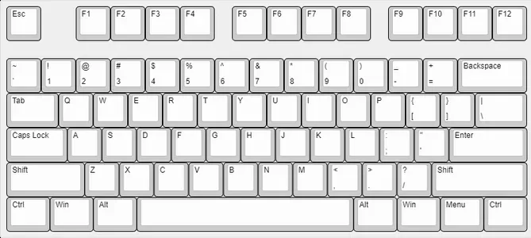
터틀봇메내퓰레이터 참고 task_7(red_blue).py 서비스 클라이언트: TurtlebotArmClient
- send_request 메서드를 통해 MoveIt으로 로봇 암 제어 명령을 보냄 타입 의미 send_request(0, "", pose_array) 특정 위치로 이동 send_request(1, "group_states") 지정된 홈 위치로 이동 send_request(2, "open") / close 그리퍼 열기/닫기 group_states home2 box_up_01 conveyor_up box_up_02 camera_home box_up_03 test_conveyor box_back_01 box_home_01 box_back_put Ex) send_rquest(1, “home2”)
터틀봇메내퓰레이터 참고 task_7(red_blue).py 키 YOLO 인식 결과를 한 번 수신하여 yolo_x, yolo_y 변수에 저장 및 콘솔 출력 YOLO 위치 수신 & 그리퍼 열기 YOLO 위치 기준으로 보정 값 적용 및 이동 물체 잡기 전 Z축 낮춤 그리퍼 close 키 키 A home2 이동 F box_up_01 이동 B conveyor_up 이동 G box_up_02 이동 C camera_home 이동 H box_up_03 이동 D test_conveyor 이동 I box_back_01 이동 E box_home_01 이동 J box_back_put 이동